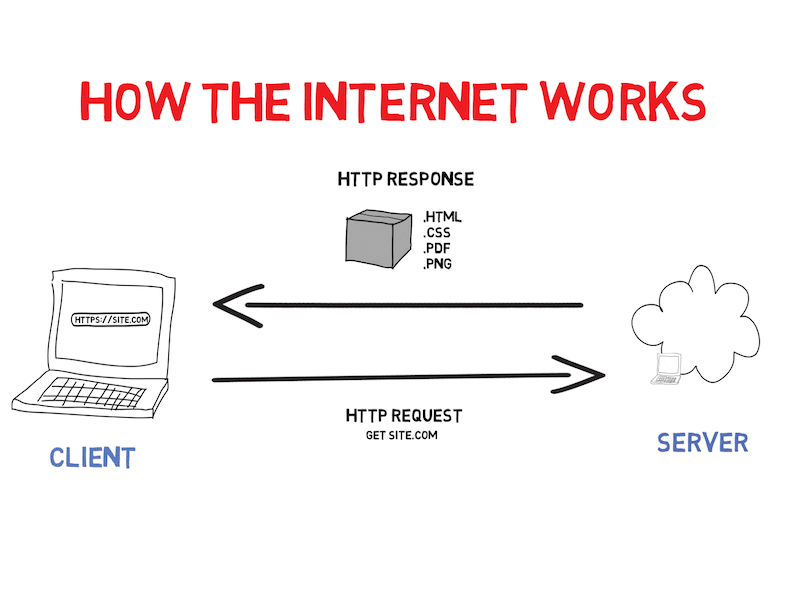

The Internet is a global network of billions of computers and other electronic devices. With the Internet, it's possible to access almost any information, communicate with anyone else in the world, and do much more. You can do all of this by connecting a computer to the Internet, which is also called going online.
How does it Work
The Internet relies on the Transmission Control Protocol (TCP) and Internet Protocol (IP) to ensure data integrity and facilitate routing. When you access a website or send an email, your device breaks down the information into packets, which travel across the Internet, reaching their destination through a series of routers. At the destination, the packets are reassembled to provide the requested information. Key components include servers, routers, and network infrastructure, all working together to enable the exchange of data worldwide.

A simple diagram of how the internet works.
How do we communicate from two different ends of the world
Communicating from two different ends of the world is facilitated by the global interconnection of devices through the Internet. Here's a simplified overview:
Data Transmission: Information, such as text, images, or video, is converted into digital data.
Internet Infrastructure: The data is then broken into packets and sent over the Internet. The Internet is a vast network of interconnected servers, routers, and data cables that span the globe.
Routing: Routers on the Internet help direct the packets from the source to the destination. These routers are responsible for determining the most efficient path for the data to travel.
Reception: The data packets arrive at their destination, where they are reassembled into the original information.
User Interface: The recipient accesses the information through their device, such as a computer or smartphone.
This entire process occurs within a fraction of a second, allowing near-instantaneous communication between two distant points on the planet. Technologies like email, video calls, and instant messaging leverage this global network to connect people worldwide.